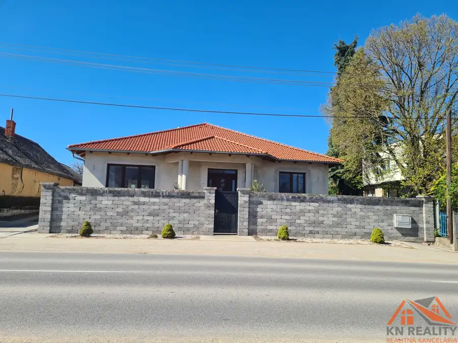
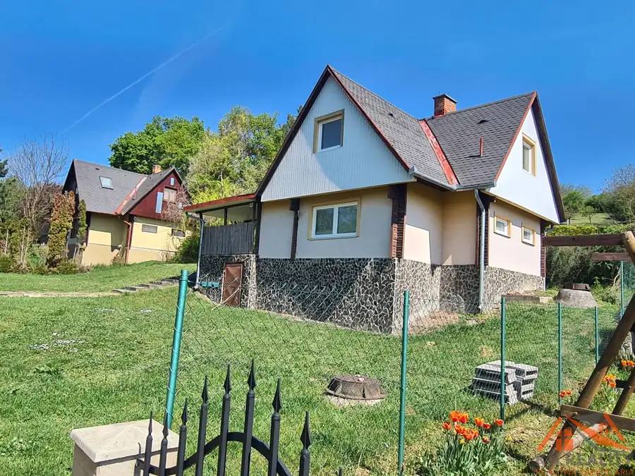
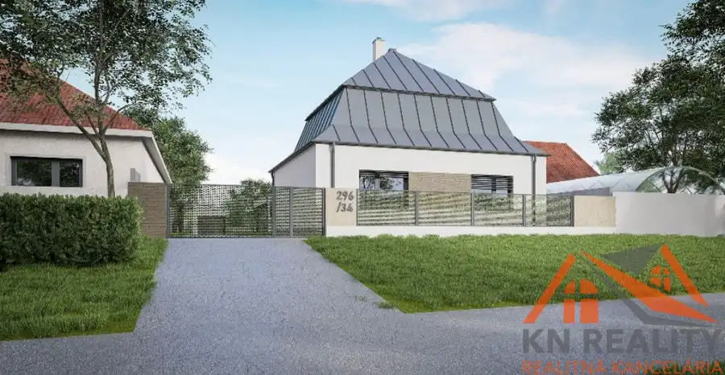

Zrekonštruovaný 3 izbový byt Komárno!
Komárno
- Dispozícia3-izbový
- Plocha58 m²
- Poschodie1. z 1
O nehnuteľnosti
Zrekonštruovaný 3-izbový byt po rekonštrukcii Komárno – Sústružnícka ul. čaká svojho nového majiteľa !
Henrieta Nemšovská - KN Reality Vám ponúka na predaj prerobený byt, ktorý vznikol z pôvodného 2-izbového a dnes ponúka plnohodnotné 3-izbové bývanie. Nachádza sa na 1. poschodí a disponuje výmerou 58 m².
Byt prešiel kompletnou rekonštrukciou, je pripravený na okamžité nasťahovanie bez ďalších investícií. Výhodou je vlastný ohrev vody, ktorý zabezpečuje vyšší komfort aj kontrolu nad nákladmi.
Praktické dispozičné riešenie, moderný vzhľad a príjemná atmosféra robia z tejto nehnuteľnosti ideálny domov.
Veľkou výhodou lokality je výborná občianska vybavenosť v pešej dostupnosti. Nachádzajú sa tu potraviny, služby, reštaurácie, škôlky či školy. Samozrejmosťou je dobré dopravné napojenie vrátane MHD. Okolie pôsobí upravene a ponúka dostatok parkovania.
Neváhajte ma kontaktovať pre viac informácií alebo obhliadku na tel.č. !
S radoťou Vás očakávam !
Parametre
| Úžitková plocha | 58 m² |
|---|---|
| Poschodie | 1/posledné poschodie |
| Počet poschodí | 1 |
| Počet izieb | 3 |
| Plyn | áno |
| Kúpeľňa | sprchovací kút |
| Vykurovanie | áno |
| Postavené z | tehla |
| Energetický certifikát | nie |
| Okná | plastové |
| Dátum zverejnenia | 27. 4. 2026 |
Kde to je
Mohlo by Vás zaujímať

Rodinné domy10 259 000 €Na predaj veľký rodinný dom s rozsiahlym pozemkom Svätý Peter ! Svätý Peter 5-izbový343 m² Predstavte si miesto, kde každý detail má svoj význam… kde priestor nie je luxusom, ale samozrejmosťou ! Vitajte vo výnimočnej nehnuteľnosti, ktorá…
Chaty a chalupy10 110 000 €Na predaj rekreačná chata blízko Dunaja Kováčov , Štúrovo ! Chľaba 4-izbový85 m² Útočisko pokoja pri prírode – rekreačná chata neďaleko Štúrova obec Chľaba časť Kováčov !!! Ponuka vhodná aj na celoročné bývanie ! Predstavte si…
Rodinné domy3 84 000 €Na predaj starší rodinný dom s krásnym pozemkom Hurbanovo ! Hurbanovo 120 m² DOM S POTENCIÁLOM – HURBANOVO ! Prikladám vizualizačné fotky daného hotového projektu k tejto nehnuteľnosti - výhoda - projektová dokumentácia v cene…